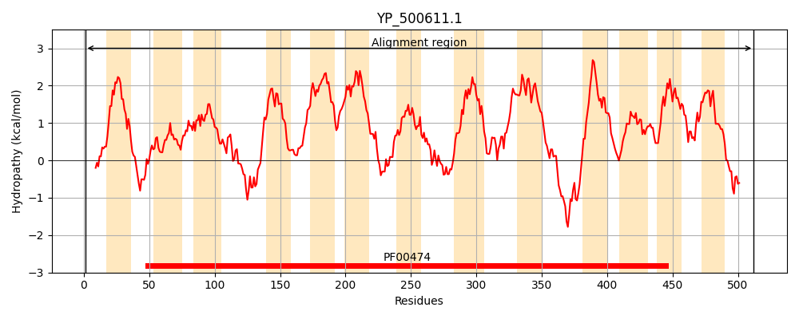
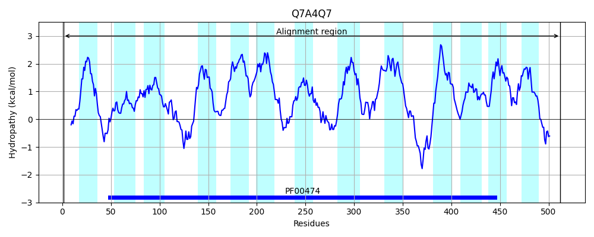
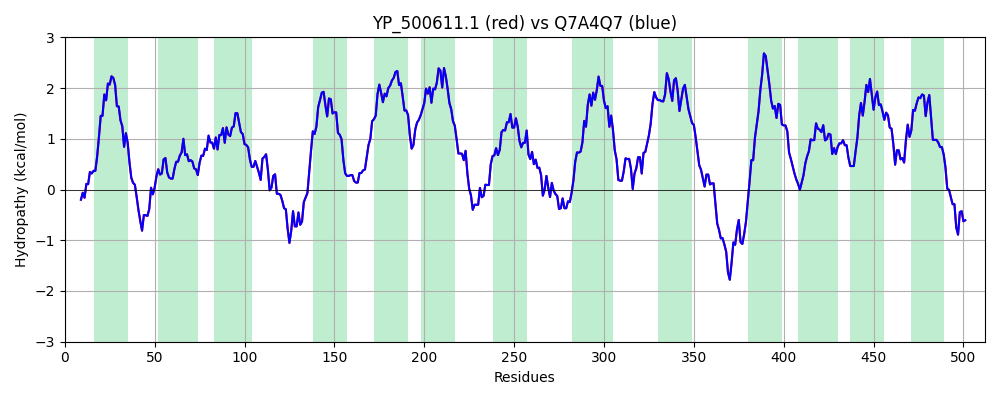

Hit Accession: Q7A4Q7
Hit TCID: 2.A.21.2.2
Hit Description: gnl|BL_ORD_ID|15371 gnl|TC-DB|Q7A4Q7|2.A.21.2.2 Sodium/proline symporter OS=Staphylococcus aureus (strain N315) GN=putP PE=1 SV=1
Mach Len: 512
e:0.000000
Query TMS Count : 13
Hit TMS Count: 13
TMS-Overlap Score: 13.550000
Predicted Substrates:CHEBI:9175;sodium(1+), CHEBI:26271;proline
BLAST Alignment:
Score: 2603 , Bit scores: 1007 bits, E-value: 0.0e+00, Alignment length: 512, Percentage identity: 100
Query: 1 MLTMGTALSQQVDANWQTYIMIAVYFLILIVIGFYGYKQATGNLSEYMLGGRSIGPYITALSAGASDMSGWMIMGLPGSVYSTGLSAMWITIGLTLGAYINYFVVAPRLRVYTELAGDAITLPDFFKNRLNDKNNVLKIISGLIIVVFFTLYTHSGFVSGGKLFESAFGLDYHFGLILVAFIVIFYTFFGGYLAVSITDFFQGVIMLIAMVMVPIVAMMNLNGWGTFHDVAAMKPTNLNLFKGLSFIGIISLFSWGLGYFGQPHIIVRFMSIKSHKMLPKARRLGISWMAVGLLGAVAVGLTGIAFVPAYHIKLEDPETLFIVMSQVLFHPLVGGFLLAAILAAIMSTISSQLLVTSSSLTEDFYKLIRGEEKAKTHQKEFVMIGRLSVLVVAIVAIAIAWNPNDTILNLVGNAWAGFGASFSPLVLFALYWKGLTRAGAVSGMVSGALVVIVWIAWIKPLAHINEIFGLYEIIPGFIVSVIVTYVVSKLTKKPGAFVETDLNKVRDIVREK 512
MLTMGTALSQQVDANWQTYIMIAVYFLILIVIGFYGYKQATGNLSEYMLGGRSIGPYITALSAGASDMSGWMIMGLPGSVYSTGLSAMWITIGLTLGAYINYFVVAPRLRVYTELAGDAITLPDFFKNRLNDKNNVLKIISGLIIVVFFTLYTHSGFVSGGKLFESAFGLDYHFGLILVAFIVIFYTFFGGYLAVSITDFFQGVIMLIAMVMVPIVAMMNLNGWGTFHDVAAMKPTNLNLFKGLSFIGIISLFSWGLGYFGQPHIIVRFMSIKSHKMLPKARRLGISWMAVGLLGAVAVGLTGIAFVPAYHIKLEDPETLFIVMSQVLFHPLVGGFLLAAILAAIMSTISSQLLVTSSSLTEDFYKLIRGEEKAKTHQKEFVMIGRLSVLVVAIVAIAIAWNPNDTILNLVGNAWAGFGASFSPLVLFALYWKGLTRAGAVSGMVSGALVVIVWIAWIKPLAHINEIFGLYEIIPGFIVSVIVTYVVSKLTKKPGAFVETDLNKVRDIVREK
Sbjct: 1 MLTMGTALSQQVDANWQTYIMIAVYFLILIVIGFYGYKQATGNLSEYMLGGRSIGPYITALSAGASDMSGWMIMGLPGSVYSTGLSAMWITIGLTLGAYINYFVVAPRLRVYTELAGDAITLPDFFKNRLNDKNNVLKIISGLIIVVFFTLYTHSGFVSGGKLFESAFGLDYHFGLILVAFIVIFYTFFGGYLAVSITDFFQGVIMLIAMVMVPIVAMMNLNGWGTFHDVAAMKPTNLNLFKGLSFIGIISLFSWGLGYFGQPHIIVRFMSIKSHKMLPKARRLGISWMAVGLLGAVAVGLTGIAFVPAYHIKLEDPETLFIVMSQVLFHPLVGGFLLAAILAAIMSTISSQLLVTSSSLTEDFYKLIRGEEKAKTHQKEFVMIGRLSVLVVAIVAIAIAWNPNDTILNLVGNAWAGFGASFSPLVLFALYWKGLTRAGAVSGMVSGALVVIVWIAWIKPLAHINEIFGLYEIIPGFIVSVIVTYVVSKLTKKPGAFVETDLNKVRDIVREK 512 | Protein Hydropathy Plots: |
|---|
|  |  |
Pairwise Alignment-Hydropathy Plot:
|
|---|
|  |